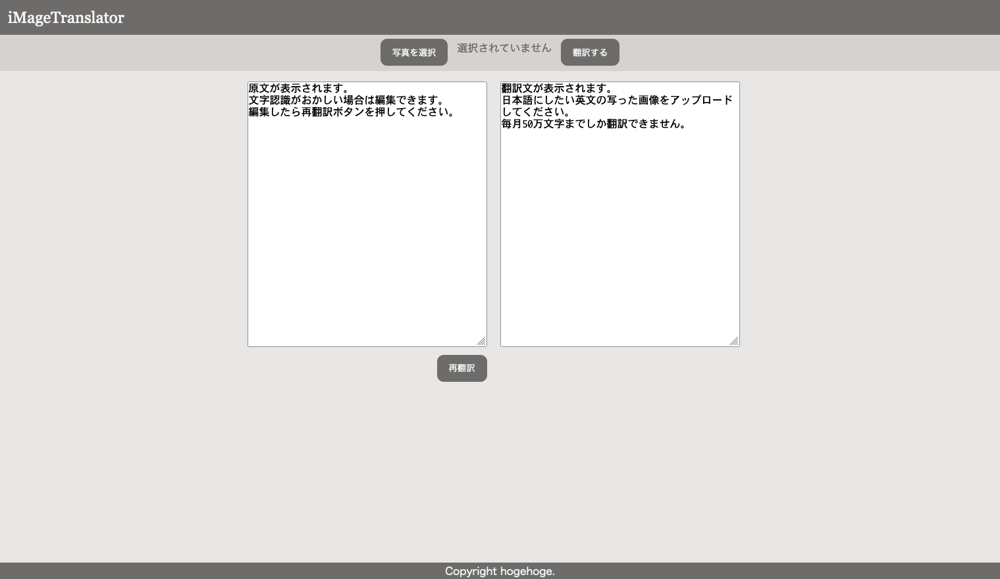

繊細な画像翻訳を手元に
アプリ紹介
コピーができないテキストや本の中に読めない英文が出てきた時、私たちはそれを翻訳するために自力で直接入力する必要がありました。もしくは、Google翻訳でスマホをかざせば翻訳ができます。このアプリは、一度スマホで写真を撮る必要はあるもののGoogle翻訳よりも繊細な英日翻訳を可能にするDeepLを使用した画像翻訳アプリです。
特徴
会員登録不要
会員登録は不要です。ページに直接アクセスするだけで使用することができます。
DeepL APIを使用
Google翻訳よりも繊細であると評価されているDeepLを使用しています。英文をより正確に日本語に翻訳することが可能です。
シンプルな操作
操作は簡単、スマホで英文が載っている部分を撮影してアップロードするだけ。英文の文字認識が不適当な場合は任意に編集することもできます。
アプリを使ってみる
↓↓
iMageTranslatorを使ってみる